每一张都能当壁纸，这座宝藏小城的春天太惊艳了！
文化西藏 ;)
春风至，波密醒
桃花灼灼映冰川
山野烟火皆入镜
藏东春日摄影作品展·第一期
横版摄影佳作来袭
定格藏东春日美景
解锁波密限定浪漫
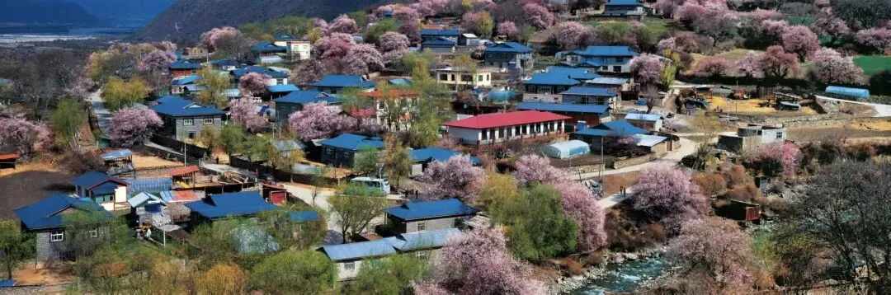
王琛（中国摄影家协会副主席、企业摄影家协会深圳负责人 、中国摄影金像奖获得者）摄
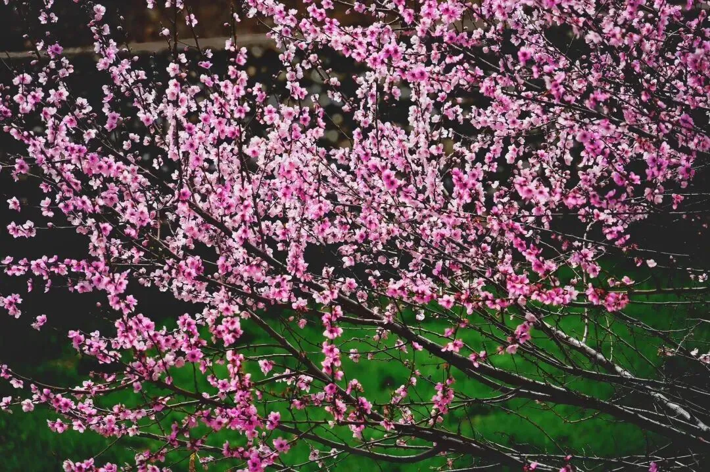
车刚（西藏著名摄影师、中国摄影家协会会员、原西藏摄影家协会副主席、中国摄影金像奖获得者）摄
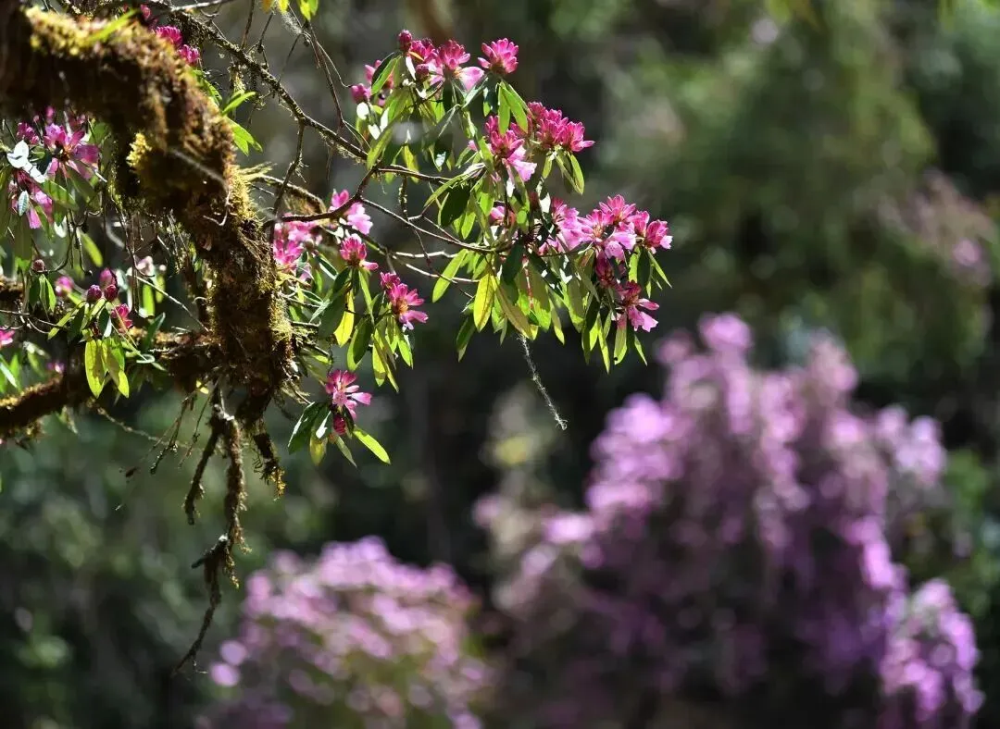
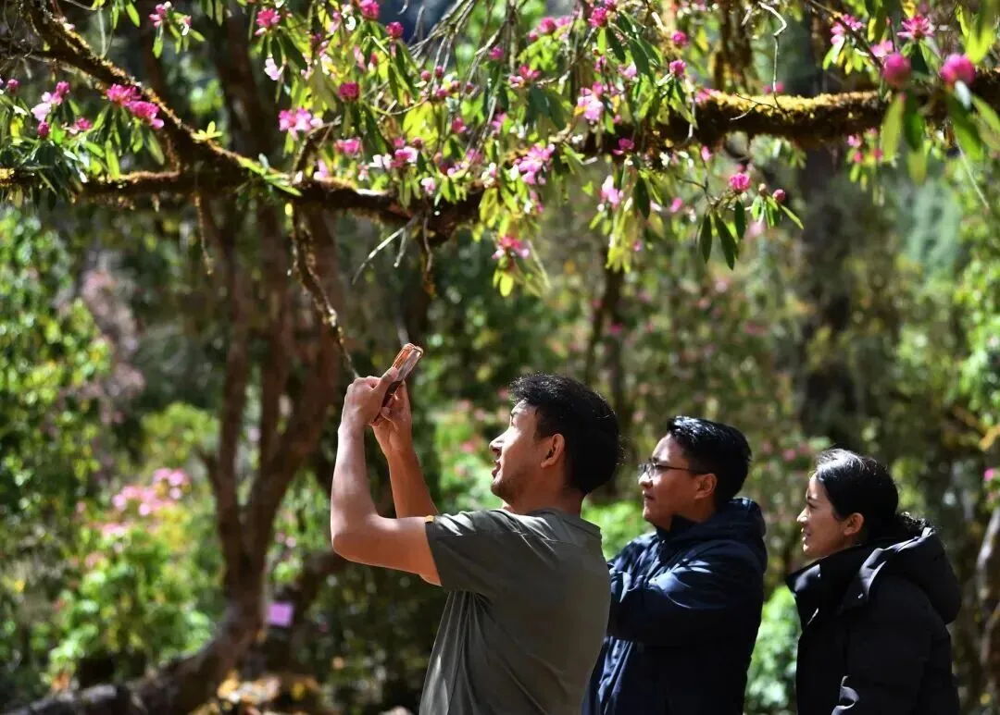
觉果（新华社高级摄影记者、中国摄影家协会会员、原西藏摄影家协会副主席）摄
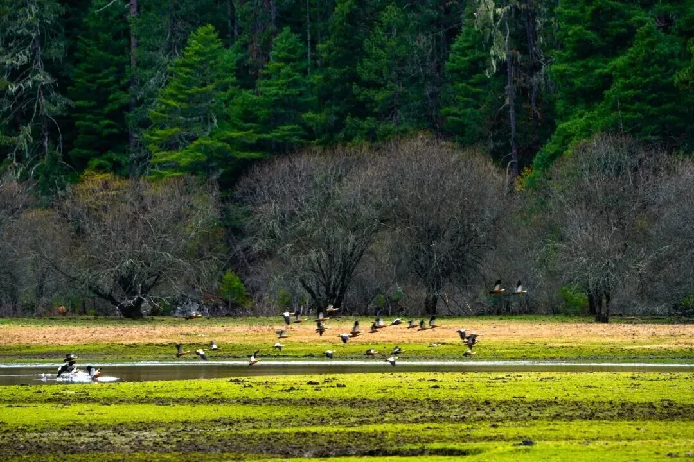
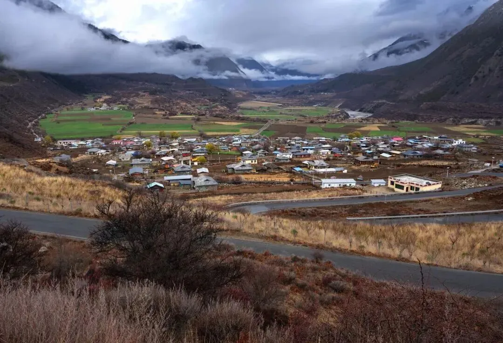
格桑加措（中国摄影家协会会员、原西藏摄影家协会副主席）摄
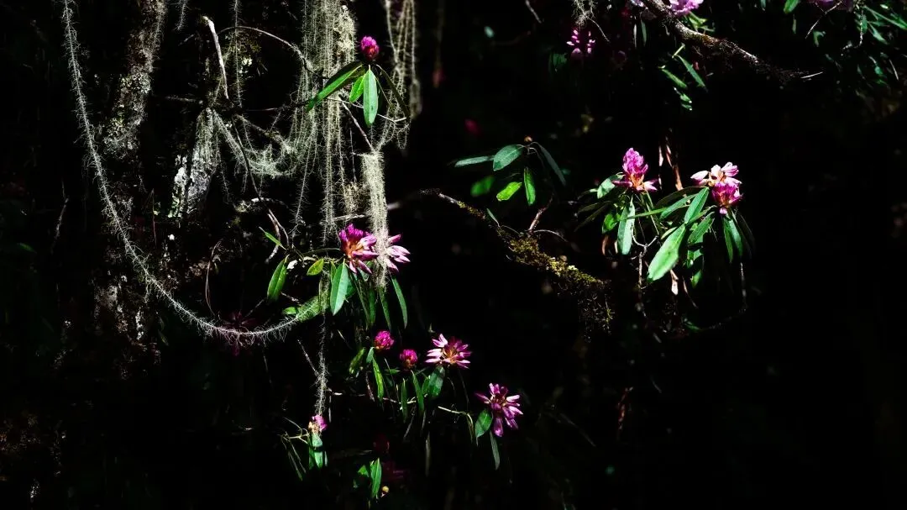
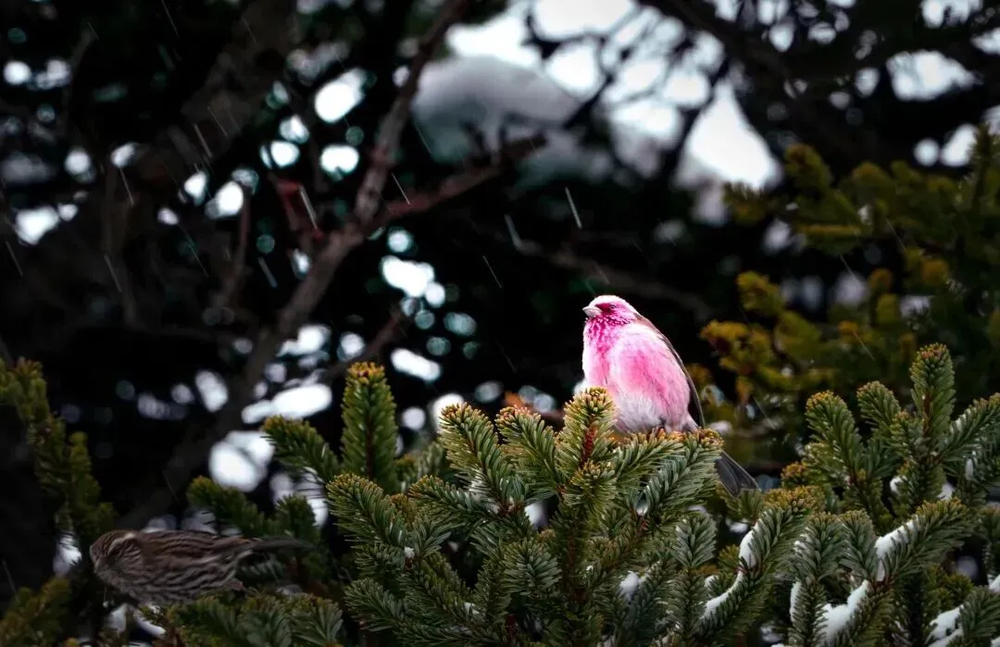
普布次仁（中国摄影家协会会员、现任西藏摄影家协会副主席） 摄
旦增洛桑 （中国摄影家协会会员、西藏摄影家协会会员）摄
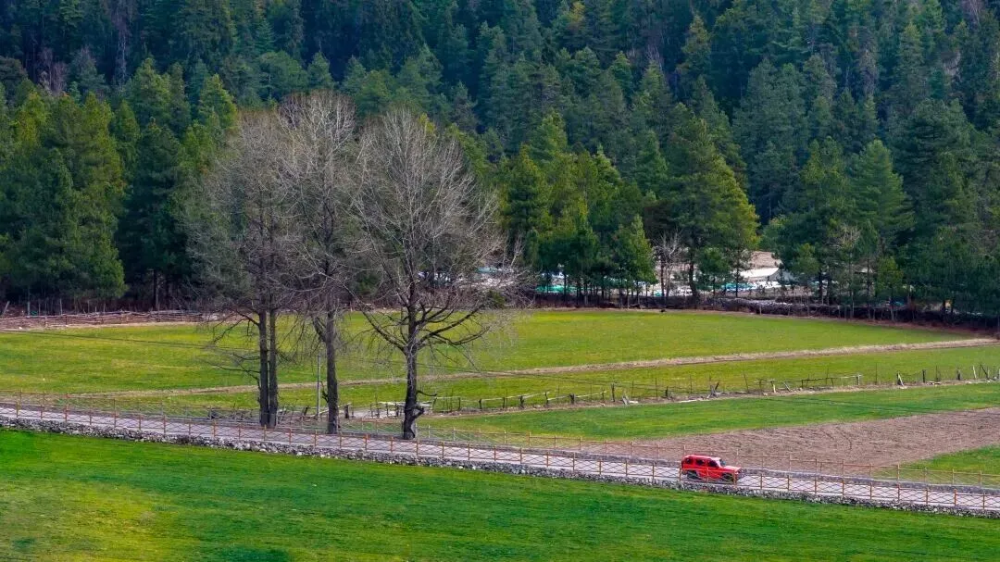
洛松次成（中国摄影家协会会员、西藏摄影家协会理事、昌都摄影家协会副主席）摄
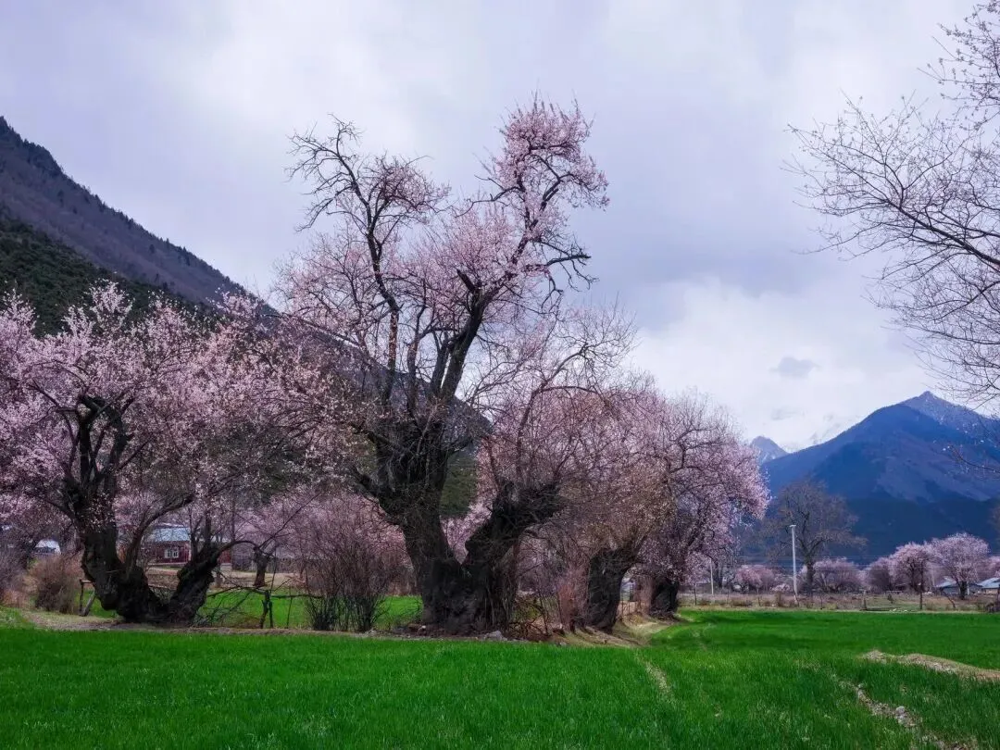
王伟涛（陕西省青年联合会特邀委员、中国摄影家协会会员、陕西摄影家协会理事、陕西省摄影家协会青少年摄影委员会委员、杨凌示范区摄影家协会副主席、雅昌签约摄影师、索尼青年签约摄影师、富士合作摄影师、图虫签约摄影师、vivo官方认证摄影讲师）摄
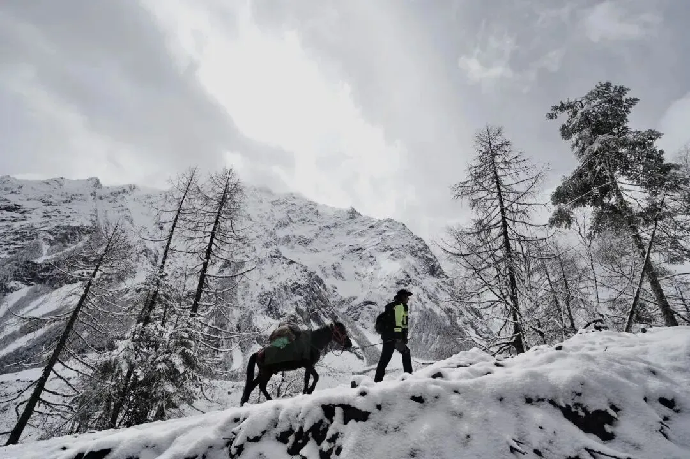
董明（人像摄影杂志主编、中国摄影家协会会员，视觉中国、500px签约摄影师、曼富图签约摄影师、中国传媒大学文学硕士、第十届中国人像摄影十杰评委）摄
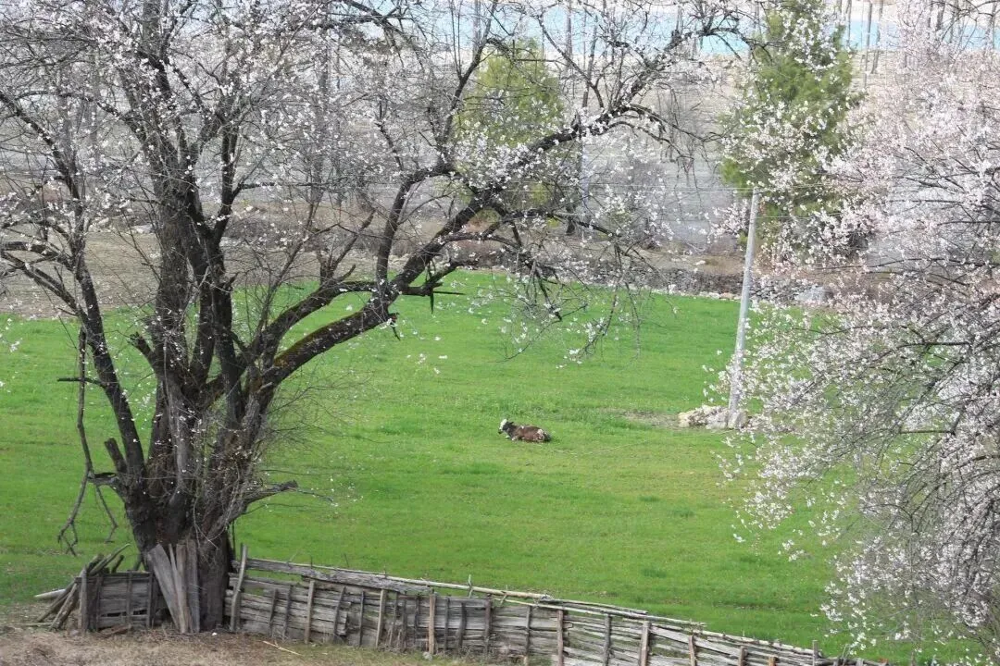
何福安（ 西藏摄影家协会会员、自由职业摄影师）摄
注：本次展出摄影作品版权归作者所有。
严禁私自保存、二改、商用及其他任何侵权行为，违者将追究法律责任。

使用完整服务
Every Photo Could Be a Wallpaper: This Treasure Town's Spring Is Absolutely Stunning!
Source: Cultural Tibet | Date: March 30, 2026
Spring wind arrives, Bomi awakens. Peach blossoms blaze against glaciers. Mountain scenery and hearth smoke all enter the frame.
Eastern Tibet Spring Photography Exhibition · Volume I — Horizontal photography masterpieces capturing Bomi's limited-edition spring romance.
Featured Photographers: Wang Chen, Che Gang, Jue Guo, Gesang Gyatso, Phurbu Tsering, Tenzin Losang, Losang Tsering, Wang Weitao, Dong Ming, He Fu'an — all distinguished members of China Photographers Association and Tibet Photographers Association.
Note: All exhibited photography works are copyrighted by the respective authors. Unauthorized use is strictly prohibited.